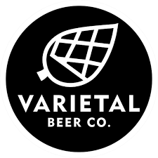

Varietal Brewing (Sunnyside)
Varietal Beer Company is one of those rare breweries that gets everything right—exceptional beer, a relaxed vibe, and even great coffee in the morning. Located in Sunnyside, it’s a must-stop in the Yakima Valley and the kind of place that quietly raises your standards for every brewery that comes after it.